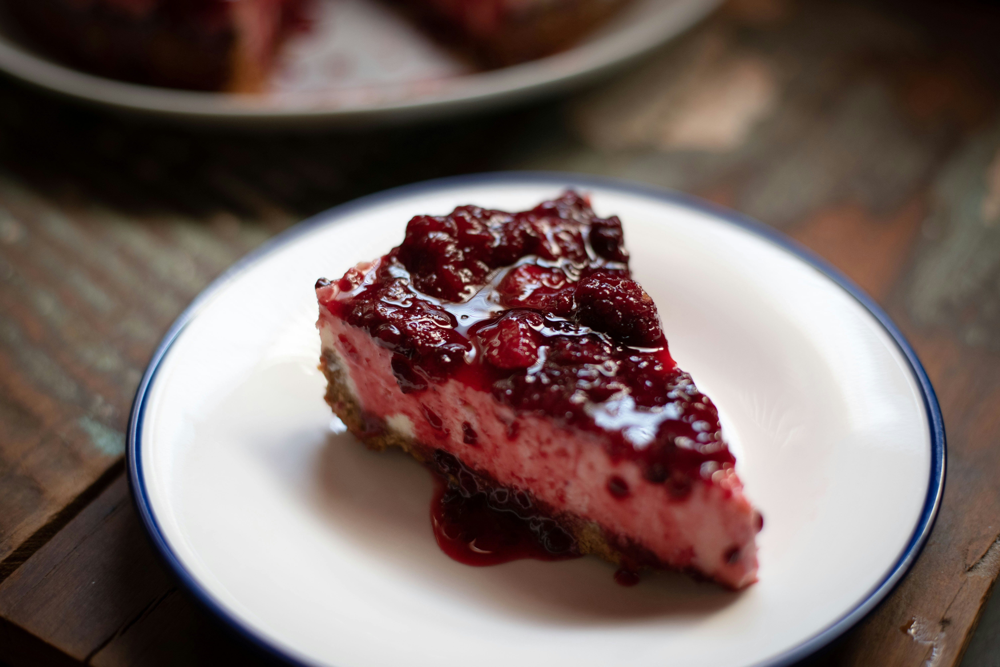
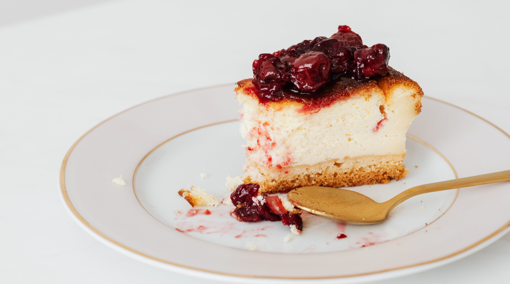

Cheesecake Recipe

This cheesecake recipe is our best recipe for cheesecake with a rich and creamy texture and cherry topping for an indulgent dessert that is also easy-to-make!
It is the perfect dessert to serve at your next party.
Cheesecake Ingredients
- Graham Cracker Crumbs
- Butter
- Sugar
- Cream Cheese
- Sour Cream
- Vanilla
- Eggs
Steps
You'll find the full, step-by-step recipe for cheesecake below — but here's a brief overview of what you can expect when you make this decadent dessert:
- Make the crust and press it into a spring form pan.
- Make the filling, then pour it over the crust
- Bake the cheesecake until the filling is almost set.
- Run a knife around the rim to loosen the sides and allow it to cool.
- Remove the cheesecake from the pan and chill before serving.
Now its time to indulge!
